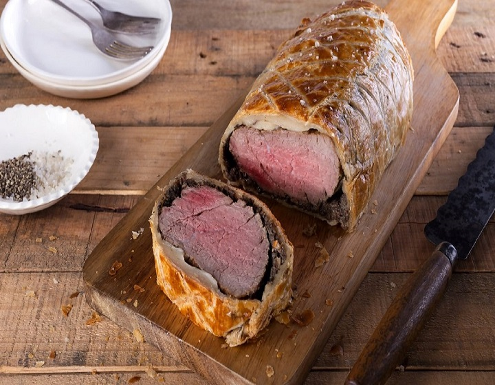

חומרים :
2 כפות שמן זית,1 קילו פילה בקר,2 כפות חרדל,2 חבילות פטריות פורטבלו,100 גרם ערמונים בוואקום,1 שן שום קלופה,פלפל אנגלי,מלח ים,300 גרם חזה אווז רצועות דקות,1 חבילה בצק עלים,חלמון ביצה
לרוטב: 20 גרם חמאה,5 בצלצלי שאלוט קצוצים,1 עלה דפנה,2 ענפי תימין,פלפל אנגלי טחון,10 דובדבנים מגולענים,2 כוסות יין אדום,3 כוסות ציר בקר איכותי
אופן ההכנה :
1 : מחממים שמן זית במחבת וכשהוא חם צורבים את פילה הבקר עם מעט מלח ופלפל מכל הצדדים. מוציאים מהמחבת, מורחים עליו חרדל כשהוא עוד חם ומניחים בצד.
2טוחנים במעבד מזון או בלנדר מוט פטריות וערמונים עם מעט מלח, פלפל ושן שום.
3 מאדים את מחית הפטריות במחבת עד שהיא מתייבשת מעט.
4פורסים ניילון נצמד על משטח העבודה ופורסים חזה אווז בכמות שתקיף את כל נתח הבשר. מורחים מעל את מחית הפטריות ומניחים מעל את הפילה הצרוב.
5 מגלגלים כך שחזה האווז יעטוף את כל הנתח, מהדקים ומעבירים למקרר למשך 15 דקות לפחות.
6פורסים שוב ניילון נצמד על משטח העבודה ומניחים ריבוע של בצק עלים כשהוא פרוש לגמרי.
7מוציאים מהמקרר את הבשר ומסירים את הניילון נצמד. מניחים את הבשר על בצק העלים, מגלגלים כך שהבצק יכסה את כל הנתח ומצמידים היטב (אם נשאר בצק, חותכים וזורקים אותו). מעבירים למקרר לחמש דקות לפחות.
8 מורחים על הבצק חלמון ביצה טרוף ומפזרים מעט מאוד מלח גס.
9מחממים תנור ל-200 מעלות.
10מחוררים כ-6 חורים בבצק על מנת שייצאו האדים בזמן הבישול, ומכניסים לתנור למשך 35 דקות (הבשר אמור לצאת ורוד ועסיסי באמצע).
11בינתיים מכינים את רוטב היין: מחממים את החמאה במחבת ומוסיפים את בצלצלי השאלוט, עלה דפנה, תימין, פלפל אנגלי והדובדבנים. מערבבים.
12מוסיפים 2 כוסות יין אדום ומבשלים עד שהרוטב מצטמצם ומסמיך.
13מוסיפים 3 כוסות ציר בקר, מבשלים שוב עד שהוא מצטמצם ומסמיך ומסננים לקבלת רוטב חלק.
14כשהביף וולינגטון מוכן מוציאים אותו מתנור וממתינים כ-15 לפני החיתוך. מגישים עם הרוטב.